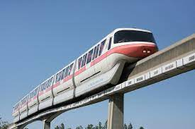
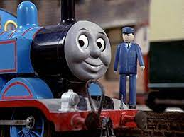
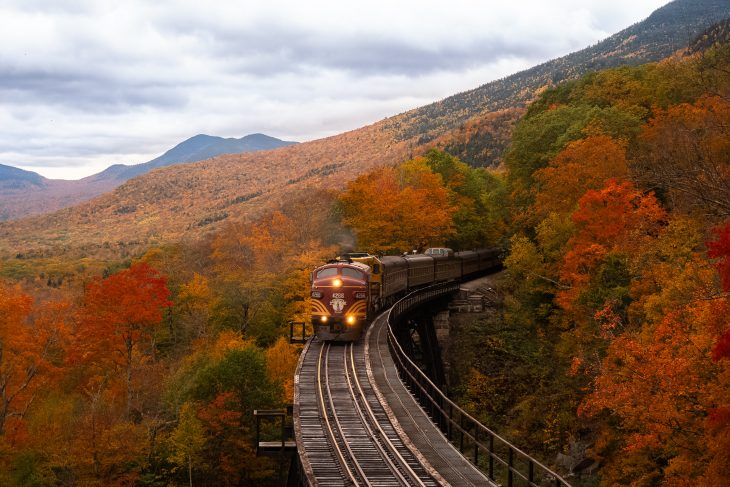
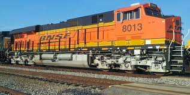

Monorails feature a single rail and are elevated from the ground.

Thomas the Train was originally only a wooden toy made for the
creator’s son.

The word Train comes from a French verb which means to draw or drag.

Diesel trains were not put into use until the 1940s to the 1960s.